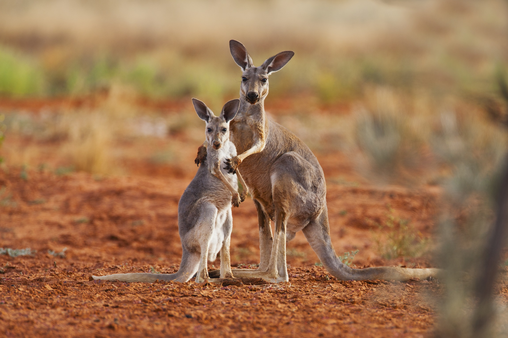
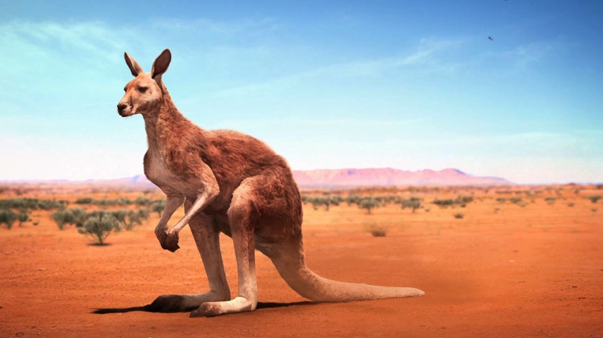

|  |  |
Egy kenguru kinézete lehet lenyűgöző. Puha bundájuk, ugróképességük és jellegzetes megjelenésük emeli ki őket a világ állatai közül. Öltözékeik gyakran alkalmazkodnak a környezethez, és kiválóan illeszkednek az árnyékos erdők vagy a nyílt mezők színeihez.
|
|
A magyar kenguru szó az északkelet-ausztráliai guugu-yimithirr nyelv szókészletéből ered.
A szót James Cook 1770. július 14-i hajónapló-bejegyzése örökítette meg, és az útról szóló könyv kiadása nyomán vált világszerte ismert vándorszóvá.
Magyar nyelvű szövegben először Földi János használta 1801-ben, kenguru alakban, de a szó csak a 19. század végére vált egyeduralkodóvá a nyelvújítás korában született riválisaival (például ugrány, górugrány) szemben.
Fel-felbukkanó tévhit, hogy a szó eredeti jelentése: „nem értem a nyelvét”, amit állítólag az ausztrál őslakosok válaszoltak, miután az európaiak megkérdezték az állat nevét tőlük.
Ezt a tévhitet John B. Haviland nyelvész cáfolta az 1970-es években. A Haviland által vizsgált szókészletben szerepelnek a gangurru és ngurrumugu egy kengurufaj megnevezéseként.
Kattints az Érdekel gombra, ha szeretnél még információkat olvasni